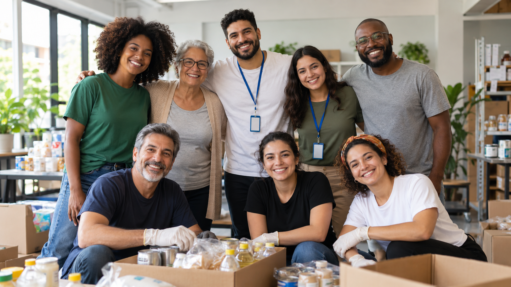

Projetos Sociais
A ONG Esperança realiza iniciativas voltadas para o apoio de pessoas e famílias em situação de vulnerabilidade social.
Campanhas de doação
As campanhas de arrecadação ajudam a ONG Esperança a atender famílias e comunidades que necessitam de apoio.

O que pode ser doado?
- Alimentos não perecíveis;
- Produtos de higiene pessoal;
- Roupas em boas condições;
- Materiais escolares;
- Recursos financeiros.
Como contribuir financeiramente?
Os interessados podem entrar em contato com a ONG Esperança para receber informações oficiais sobre as campanhas de arrecadação e os meios disponíveis para contribuição.
Montagem de cestas básicas
Uma das atividades realizadas pelos voluntários é a organização e montagem de cestas básicas destinadas às famílias atendidas pelos projetos da ONG.

Trabalho voluntário
O trabalho dos voluntários é fundamental para a realização das ações da ONG Esperança.

Atividades realizadas pelos voluntários
- Organização de alimentos e donativos;
- Participação em campanhas solidárias;
- Apoio na distribuição de alimentos;
- Organização de eventos comunitários;
- Auxílio nas atividades da instituição.
Quero participar
Para participar das atividades ou demonstrar interesse em contribuir com os projetos da ONG Esperança, preencha nosso formulário de cadastro.